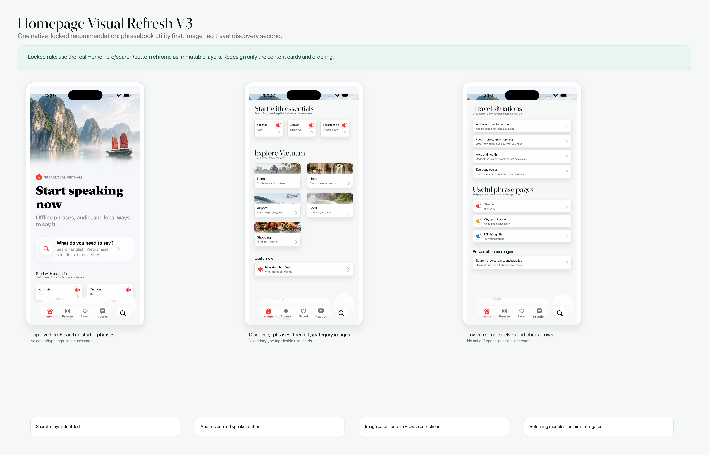
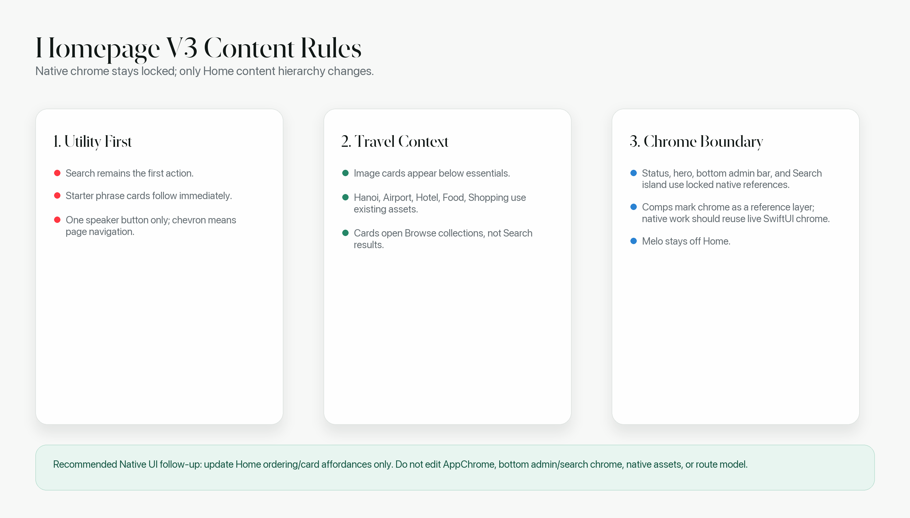
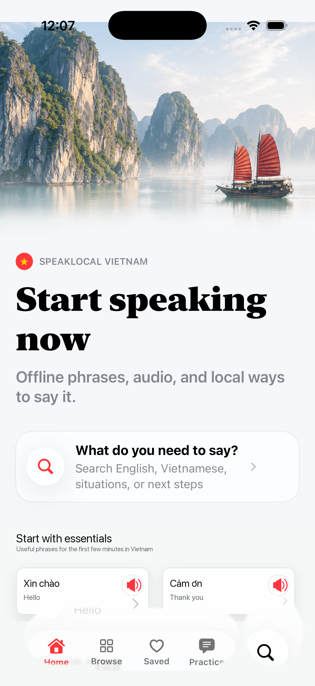
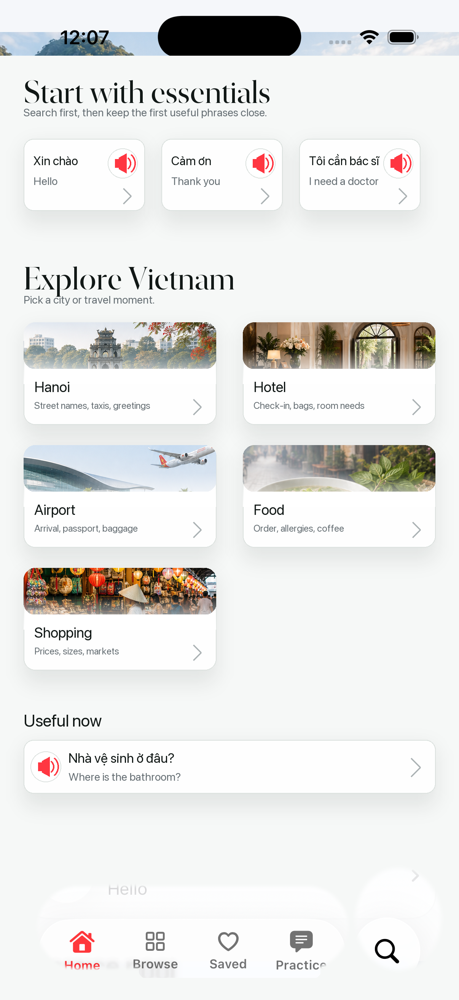
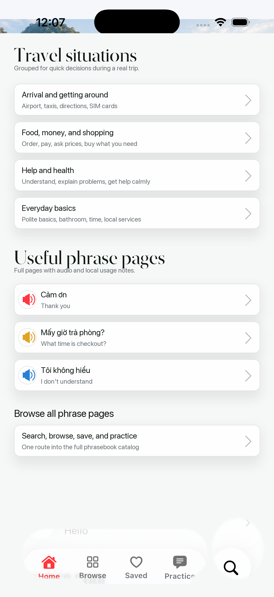
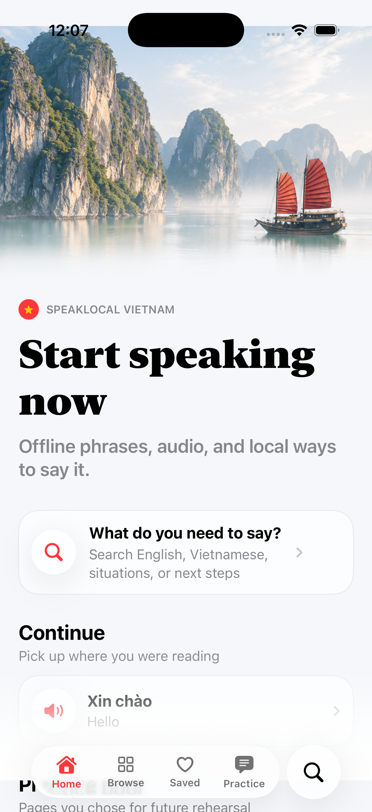
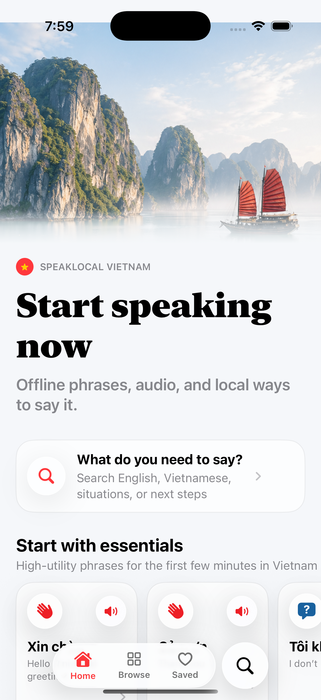

Homepage Visual Refresh V3
Native-locked storyboard packet for SpeakLocal Vietnam. V3 keeps the existing Home hero, native Search entry, bottom admin bar, and Search island as fixed product chrome, then refreshes only the Home content hierarchy and cards.
Recommended system: Search first, starter phrases second, image-led city/category discovery third, calmer lower shelves after that. No implied action/type labels inside user cards.
Docs-only
Native locked
One recommendation
No Swift edits
No Melo on Home
Contact Sheet


Phone Screens



References


Docs
Supporting docs: README and peer review.